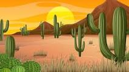

Introduction
Nature is a masterful artist, crafting landscapes and lifeforms that inspire awe and wonder. From the delicate petals of a blooming flower to the towering majesty of mountains, nature's creations are a testament to the beauty and complexity of our world. In this blog post, we'll explore some of the most astonishing examples of nature's artistry, each a masterpiece in its own right.
The Artistry of a Sunrise
There are few sights as breathtaking as a sunrise. As the first light of dawn breaks over the horizon, the sky becomes a canvas of vivid colors, painting the world with shades of orange, pink, and gold. Each sunrise is a unique masterpiece, and it serves as a reminder of the simple yet profound beauty of the natural world.
Intricate Patterns of a Snowflake
Snowflakes are nature's tiny, frozen gems. These delicate ice crystals form in an astonishing array of intricate patterns, with no two snowflakes ever alike. Their perfect hexagonal symmetry is a testament to the precision and artistry of nature, reminding us of the wonder that can be found in even the smallest of things.
The Grandeur of the Grand Canyon
The Grand Canyon is nature's grand masterpiece. Carved by the Colorado River over millions of years, this vast chasm reveals layer upon layer of Earth's history. Its awe-inspiring size and intricate geological details make it a testament to the creative forces of nature, and a sight that leaves visitors in awe of its grandeur.
The Resilience of Life in the Desert
In the arid deserts of the world, life manages to thrive in the harshest of conditions. Cacti, with their striking shapes and vibrant blooms, stand as a symbol of nature's resilience. These remarkable plants have adapted to scarcity and extremes, proving that life's creativity knows no bounds.
Conclusion
Nature's creations are an endless source of wonder and inspiration. Whether in the brilliance of a sunrise, the intricacy of a snowflake, the grandeur of natural landscapes, or the resilience of life in challenging environments, we find a world filled with artistry and creativity. As we explore these wonders, let's remember the importance of cherishing and protecting the natural world, ensuring that future generations can continue to marvel at the beauty of nature's creations.